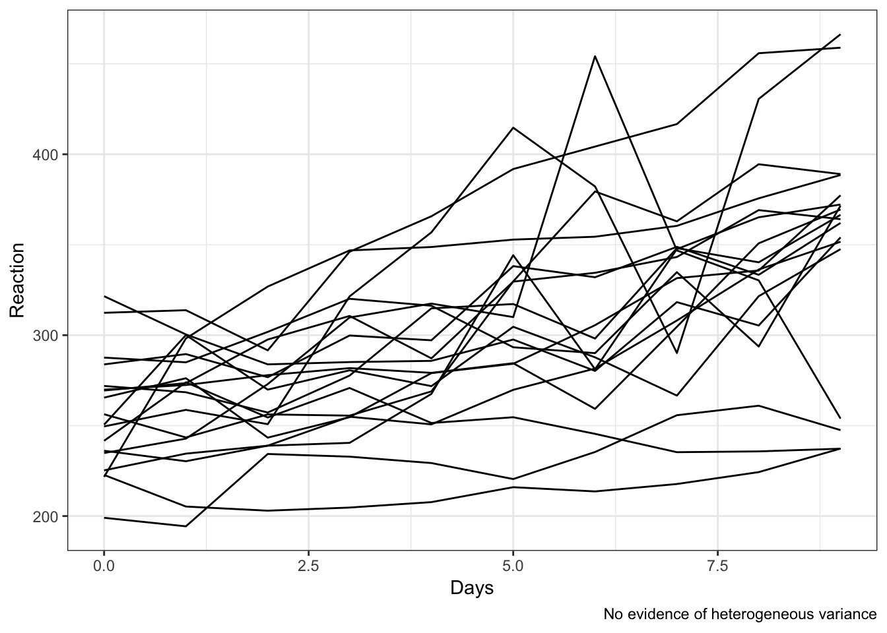
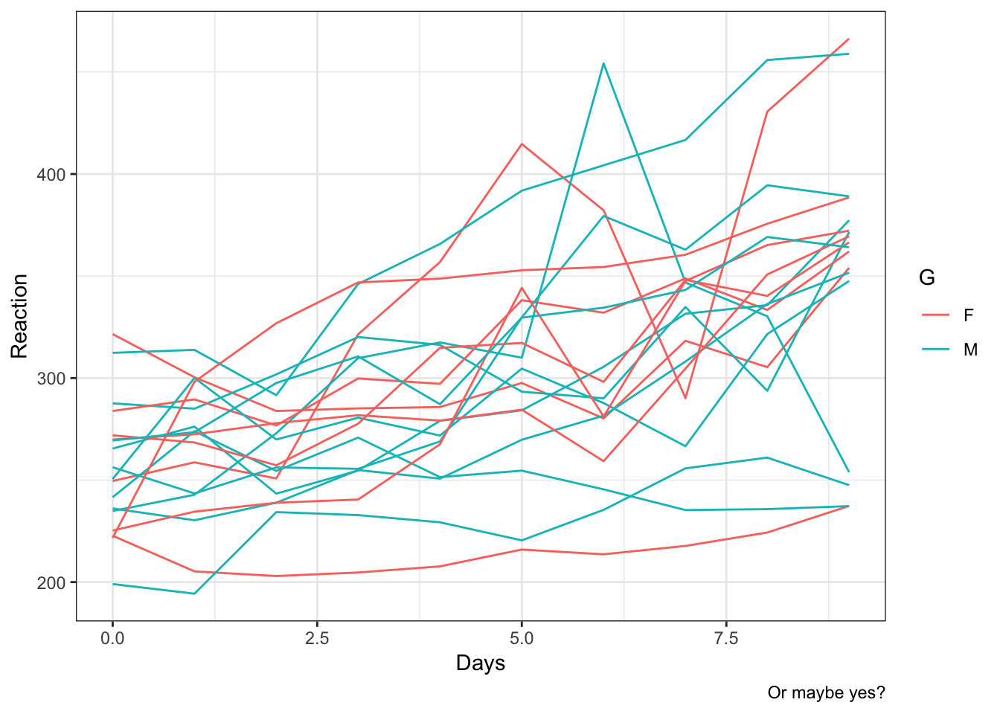

Here we present the implementation of mixed modelling with heterogenous variance components. Normally, we assume that the variance is equally distributed across stimuli, participants, timepoints… Sometimes, variance may systematically vary between conditions, and it might be useful to model this explicitly. One example might be measures taken in time after a certain event (eg, taking a drug) across a wide span: observations closer in time to the event might be more similar between each other, with variance dropping while the drug takes its effect. However, with time, the effect of the drug tend to disappear and variance may increase again. So heterogeneous variance is like an hypothesis and needs to be verified with model selection.
## Reaction Days Subject lunch
## 1 249.5600 0 308 0
## 2 258.7047 1 308 0
## 3 250.8006 2 308 1
## 4 321.4398 3 308 0
## 5 356.8519 4 308 1
## 6 414.6901 5 308 1## Subject G
## 1 308 F
## 2 309 F
## 3 310 M
## 4 330 F
## 5 331 M
## 6 332 M## Reaction Days Subject lunch G
## 1 249.5600 0 308 0 F
## 2 258.7047 1 308 0 F
## 3 250.8006 2 308 1 F
## 4 321.4398 3 308 0 F
## 5 356.8519 4 308 1 F
## 6 414.6901 5 308 1 FIs variance different in the two groups?


it looks like group F have more outliers but more consistent variation, while group M have a slightly bigger variance (more spread out).
This model assumes common variance between and within person, irrespective of the variable G. This is the default model fit by lme with the standard specification of the ranom effect with 1 grouping variable:
## Linear mixed-effects model fit by REML
## Data: data_2
## AIC BIC logLik
## 1910.327 1919.889 -952.1633
##
## Random effects:
## Formula: ~1 | Subject
## (Intercept) Residual
## StdDev: 35.75385 44.25907
##
## Fixed effects: Reaction ~ 1
## Value Std.Error DF t-value
## (Intercept) 298.5079 9.049936 162 32.98453
## p-value
## (Intercept) 0
##
## Standardized Within-Group Residuals:
## Min Q1 Med Q3
## -2.4983313 -0.5501348 -0.1475698 0.5122894
## Max
## 3.3445880
##
## Number of Observations: 180
## Number of Groups: 18## [1] "1278.338"1278.338 is the common variance across the 2 groups attributable to between-persons differences. This, summed to the residual variance 1958.865, gives the total variance.
By extracting the Variance-Covariance Matrix, we may visualise the total variance on the diagonal, and the common covariance off-diagonal.
## Subject 308
## Marginal variance covariance matrix
## 1 2 3 4 5 6
## 1 3237.2 1278.3 1278.3 1278.3 1278.3 1278.3
## 2 1278.3 3237.2 1278.3 1278.3 1278.3 1278.3
## 3 1278.3 1278.3 3237.2 1278.3 1278.3 1278.3
## 4 1278.3 1278.3 1278.3 3237.2 1278.3 1278.3
## 5 1278.3 1278.3 1278.3 1278.3 3237.2 1278.3
## 6 1278.3 1278.3 1278.3 1278.3 1278.3 3237.2
## 7 1278.3 1278.3 1278.3 1278.3 1278.3 1278.3
## 8 1278.3 1278.3 1278.3 1278.3 1278.3 1278.3
## 9 1278.3 1278.3 1278.3 1278.3 1278.3 1278.3
## 10 1278.3 1278.3 1278.3 1278.3 1278.3 1278.3
## 7 8 9 10
## 1 1278.3 1278.3 1278.3 1278.3
## 2 1278.3 1278.3 1278.3 1278.3
## 3 1278.3 1278.3 1278.3 1278.3
## 4 1278.3 1278.3 1278.3 1278.3
## 5 1278.3 1278.3 1278.3 1278.3
## 6 1278.3 1278.3 1278.3 1278.3
## 7 3237.2 1278.3 1278.3 1278.3
## 8 1278.3 3237.2 1278.3 1278.3
## 9 1278.3 1278.3 3237.2 1278.3
## 10 1278.3 1278.3 1278.3 3237.2
## Standard Deviations: 56.896 56.896 56.896 56.896 56.896 56.896 56.896 56.896 56.896 56.896The Variance-Covariance structure is the same for all subjects:
## Subject 369
## Marginal variance covariance matrix
## 1 2 3 4 5 6
## 1 3237.2 1278.3 1278.3 1278.3 1278.3 1278.3
## 2 1278.3 3237.2 1278.3 1278.3 1278.3 1278.3
## 3 1278.3 1278.3 3237.2 1278.3 1278.3 1278.3
## 4 1278.3 1278.3 1278.3 3237.2 1278.3 1278.3
## 5 1278.3 1278.3 1278.3 1278.3 3237.2 1278.3
## 6 1278.3 1278.3 1278.3 1278.3 1278.3 3237.2
## 7 1278.3 1278.3 1278.3 1278.3 1278.3 1278.3
## 8 1278.3 1278.3 1278.3 1278.3 1278.3 1278.3
## 9 1278.3 1278.3 1278.3 1278.3 1278.3 1278.3
## 10 1278.3 1278.3 1278.3 1278.3 1278.3 1278.3
## 7 8 9 10
## 1 1278.3 1278.3 1278.3 1278.3
## 2 1278.3 1278.3 1278.3 1278.3
## 3 1278.3 1278.3 1278.3 1278.3
## 4 1278.3 1278.3 1278.3 1278.3
## 5 1278.3 1278.3 1278.3 1278.3
## 6 1278.3 1278.3 1278.3 1278.3
## 7 3237.2 1278.3 1278.3 1278.3
## 8 1278.3 3237.2 1278.3 1278.3
## 9 1278.3 1278.3 3237.2 1278.3
## 10 1278.3 1278.3 1278.3 3237.2
## Standard Deviations: 56.896 56.896 56.896 56.896 56.896 56.896 56.896 56.896 56.896 56.896The variance attributed to subject is a measure of the intraclass correlation and can be converted to a correlation coefficient when divided by the total variance (in this case, ICC = 1959.865)
This kind of variance structure is also termed “compund symmetry”. The model assignes this structure by default, however, this can be explicitly specified in the random effect:
This gives exactly the same result with between-subject Variance = rVarCorr(model.01)[1]. pdSymm creates a positive-definite Symmetric matrix:
## Positive definite matrix structure of class pdSymm representing
## A B C
## A 1 0 0
## B 0 1 0
## C 0 0 1We specify a positive-definite diagonal matrix, meaning that variance changes with group between subjects, but it is common within subject (which makes sense since these people are either males or females but not both…)
## Linear mixed-effects model fit by REML
## Data: data_2
## AIC BIC logLik
## 1912.321 1925.07 -952.1603
##
## Random effects:
## Formula: ~factor(G) | Subject
## Structure: Diagonal
## (Intercept) factor(G)M Residual
## StdDev: 35.15491 8.737975 44.25907
##
## Fixed effects: Reaction ~ 1
## Value Std.Error DF t-value
## (Intercept) 298.5624 9.046761 162 33.00213
## p-value
## (Intercept) 0
##
## Standardized Within-Group Residuals:
## Min Q1 Med Q3
## -2.4950345 -0.5489804 -0.1477674 0.5145739
## Max
## 3.3438352
##
## Number of Observations: 180
## Number of Groups: 18Here we have a differential term of Variance for G = M (the other level is taken as threshold).
## Subject = pdDiag(factor(G))
## Variance StdDev
## (Intercept) 1235.86768 35.154910
## factor(G)M 76.35221 8.737975
## Residual 1958.86487 44.259065Let’s check the Variance-Covariance Matrix of 2 subjects pertaining to different groups; here are subject 308 (F), and 310 (M):
## Subject 308
## Marginal variance covariance matrix
## 1 2 3 4 5 6
## 1 3194.7 1235.9 1235.9 1235.9 1235.9 1235.9
## 2 1235.9 3194.7 1235.9 1235.9 1235.9 1235.9
## 3 1235.9 1235.9 3194.7 1235.9 1235.9 1235.9
## 4 1235.9 1235.9 1235.9 3194.7 1235.9 1235.9
## 5 1235.9 1235.9 1235.9 1235.9 3194.7 1235.9
## 6 1235.9 1235.9 1235.9 1235.9 1235.9 3194.7
## 7 1235.9 1235.9 1235.9 1235.9 1235.9 1235.9
## 8 1235.9 1235.9 1235.9 1235.9 1235.9 1235.9
## 9 1235.9 1235.9 1235.9 1235.9 1235.9 1235.9
## 10 1235.9 1235.9 1235.9 1235.9 1235.9 1235.9
## 7 8 9 10
## 1 1235.9 1235.9 1235.9 1235.9
## 2 1235.9 1235.9 1235.9 1235.9
## 3 1235.9 1235.9 1235.9 1235.9
## 4 1235.9 1235.9 1235.9 1235.9
## 5 1235.9 1235.9 1235.9 1235.9
## 6 1235.9 1235.9 1235.9 1235.9
## 7 3194.7 1235.9 1235.9 1235.9
## 8 1235.9 3194.7 1235.9 1235.9
## 9 1235.9 1235.9 3194.7 1235.9
## 10 1235.9 1235.9 1235.9 3194.7
## Standard Deviations: 56.522 56.522 56.522 56.522 56.522 56.522 56.522 56.522 56.522 56.522
## Subject 310
## Marginal variance covariance matrix
## 1 2 3 4 5 6
## 1 3271.1 1312.2 1312.2 1312.2 1312.2 1312.2
## 2 1312.2 3271.1 1312.2 1312.2 1312.2 1312.2
## 3 1312.2 1312.2 3271.1 1312.2 1312.2 1312.2
## 4 1312.2 1312.2 1312.2 3271.1 1312.2 1312.2
## 5 1312.2 1312.2 1312.2 1312.2 3271.1 1312.2
## 6 1312.2 1312.2 1312.2 1312.2 1312.2 3271.1
## 7 1312.2 1312.2 1312.2 1312.2 1312.2 1312.2
## 8 1312.2 1312.2 1312.2 1312.2 1312.2 1312.2
## 9 1312.2 1312.2 1312.2 1312.2 1312.2 1312.2
## 10 1312.2 1312.2 1312.2 1312.2 1312.2 1312.2
## 7 8 9 10
## 1 1312.2 1312.2 1312.2 1312.2
## 2 1312.2 1312.2 1312.2 1312.2
## 3 1312.2 1312.2 1312.2 1312.2
## 4 1312.2 1312.2 1312.2 1312.2
## 5 1312.2 1312.2 1312.2 1312.2
## 6 1312.2 1312.2 1312.2 1312.2
## 7 3271.1 1312.2 1312.2 1312.2
## 8 1312.2 3271.1 1312.2 1312.2
## 9 1312.2 1312.2 3271.1 1312.2
## 10 1312.2 1312.2 1312.2 3271.1
## Standard Deviations: 57.193 57.193 57.193 57.193 57.193 57.193 57.193 57.193 57.193 57.193The diagonal total variance and off-diagonal covariance change with G by a factor of 76.35221.
Since this is a longitudinal design, variances may also change within subject. This may happen, for example, when observations that are closer in time are more similar to each other than observations occurring at a later time point. In this case, we capitalise on the between and within subject variability across multiple time points, and we assign a weight depending on the time of observation:
## Linear mixed-effects model fit by REML
## Data: data_2
## AIC BIC logLik
## 1872.486 1910.735 -924.243
##
## Random effects:
## Formula: ~1 | Subject
## (Intercept) Residual
## StdDev: 36.34266 44.26675
##
## Variance function:
## Structure: Different standard deviations per stratum
## Formula: ~1 | factor(Days)
## Parameter estimates:
## 0 1 2 3
## 1.0000000 0.7430690 0.6639201 0.2702922
## 4 5 6 7
## 0.3127369 0.8492301 1.1462055 1.0878625
## 8 9
## 1.4884096 1.8360810
## Fixed effects: Reaction ~ 1
## Value Std.Error DF t-value
## (Intercept) 285.7469 8.758025 162 32.62687
## p-value
## (Intercept) 0
##
## Standardized Within-Group Residuals:
## Min Q1 Med Q3
## -2.6435227 -0.4410395 0.1204819 0.7318349
## Max
## 2.9048085
##
## Number of Observations: 180
## Number of Groups: 18Between-subject variances:
## Subject = pdSymm(1)
## Variance StdDev
## (Intercept) 1320.789 36.34266
## Residual 1959.546 44.266751320.789 is the between-subject variation. However, there is also a variation within the same subject now, on the diagonal:
## Subject 308
## Marginal variance covariance matrix
## 1 2 3 4 5 6
## 1 3280.3 1320.8 1320.8 1320.8 1320.8 1320.8
## 2 1320.8 2402.8 1320.8 1320.8 1320.8 1320.8
## 3 1320.8 1320.8 2184.5 1320.8 1320.8 1320.8
## 4 1320.8 1320.8 1320.8 1463.9 1320.8 1320.8
## 5 1320.8 1320.8 1320.8 1320.8 1512.4 1320.8
## 6 1320.8 1320.8 1320.8 1320.8 1320.8 2734.0
## 7 1320.8 1320.8 1320.8 1320.8 1320.8 1320.8
## 8 1320.8 1320.8 1320.8 1320.8 1320.8 1320.8
## 9 1320.8 1320.8 1320.8 1320.8 1320.8 1320.8
## 10 1320.8 1320.8 1320.8 1320.8 1320.8 1320.8
## 7 8 9 10
## 1 1320.8 1320.8 1320.8 1320.8
## 2 1320.8 1320.8 1320.8 1320.8
## 3 1320.8 1320.8 1320.8 1320.8
## 4 1320.8 1320.8 1320.8 1320.8
## 5 1320.8 1320.8 1320.8 1320.8
## 6 1320.8 1320.8 1320.8 1320.8
## 7 3895.2 1320.8 1320.8 1320.8
## 8 1320.8 3639.8 1320.8 1320.8
## 9 1320.8 1320.8 5661.9 1320.8
## 10 1320.8 1320.8 1320.8 7926.8
## Standard Deviations: 57.274 49.018 46.739 38.262 38.89 52.288 62.412 60.331 75.246 89.033
## Subject 310
## Marginal variance covariance matrix
## 1 2 3 4 5 6
## 1 3280.3 1320.8 1320.8 1320.8 1320.8 1320.8
## 2 1320.8 2402.8 1320.8 1320.8 1320.8 1320.8
## 3 1320.8 1320.8 2184.5 1320.8 1320.8 1320.8
## 4 1320.8 1320.8 1320.8 1463.9 1320.8 1320.8
## 5 1320.8 1320.8 1320.8 1320.8 1512.4 1320.8
## 6 1320.8 1320.8 1320.8 1320.8 1320.8 2734.0
## 7 1320.8 1320.8 1320.8 1320.8 1320.8 1320.8
## 8 1320.8 1320.8 1320.8 1320.8 1320.8 1320.8
## 9 1320.8 1320.8 1320.8 1320.8 1320.8 1320.8
## 10 1320.8 1320.8 1320.8 1320.8 1320.8 1320.8
## 7 8 9 10
## 1 1320.8 1320.8 1320.8 1320.8
## 2 1320.8 1320.8 1320.8 1320.8
## 3 1320.8 1320.8 1320.8 1320.8
## 4 1320.8 1320.8 1320.8 1320.8
## 5 1320.8 1320.8 1320.8 1320.8
## 6 1320.8 1320.8 1320.8 1320.8
## 7 3895.2 1320.8 1320.8 1320.8
## 8 1320.8 3639.8 1320.8 1320.8
## 9 1320.8 1320.8 5661.9 1320.8
## 10 1320.8 1320.8 1320.8 7926.8
## Standard Deviations: 57.274 49.018 46.739 38.262 38.89 52.288 62.412 60.331 75.246 89.033And within-subject variances by day (a bit difficult to extract…):
## wss
## 1 1081.9662
## 2 863.7479
## 3 143.1602
## 4 191.6521
## 5 1413.2083
## 6 2574.4255
## 7 2319.0142
## 8 4341.1048
## 9 6606.0071Variances decrease until the 4th day, then increases again (probably related to correlation between observations close in time).